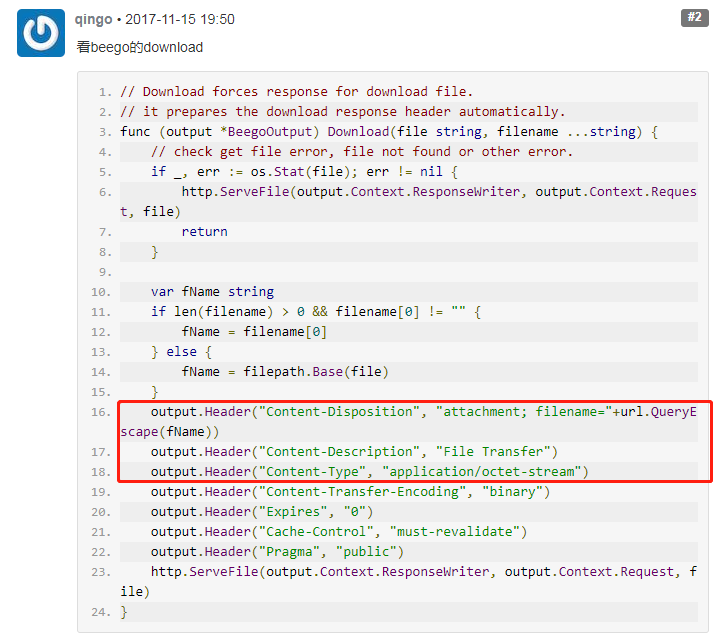
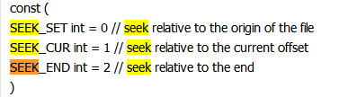

做过服务器上传下载的一个接口，将其整理整理写出来备忘吧。
上传文件
1
2
3
4
5
6
7
8
9
10
11
12
13
14
15
16
17
18
19
20
21
22
23
24
25
26
27
|
r.Body = http.MaxBytesReader(w, r.Body, MAX_UPLOAD_SIZE)
if err := r.ParseMultipartForm(MAX_UPLOAD_SIZE); err != nil {
sendErrorResponse(w, http.StatusBadRequest, "File is too big")
return
}
file, _, err := r.FormFile("file")
if err != nil {
log.Printf("Error when try to get file: %v", err)
sendErrorResponse(w, http.StatusInternalServerError, "Internal Error")
return
}
data, err := ioutil.ReadAll(file)
if err != nil {
log.Printf("Read file error: %v", err)
sendErrorResponse(w, http.StatusInternalServerError, "Internal Error")
return
}
err = ioutil.WriteFile("./store""", data, 0666)
if err != nil {
log.Printf("write file error: %v", err)
sendErrorResponse(w, http.StatusInternalServerError, "Internal Error")
return
}
|
下载文件（Gin）
下载前端可直接使用windows.location.href，该函数会发出“Get”请求到服务器，不过这里就会要求将通信参数都置于URL中，若别人拿着链接就可以直接进行下载操作了。
此处是可以将请求变为POST的，也就是不使用windows.location.href来做，这里我就不做太多介绍了。
后端核心代码，Header参数填写来自beego，见文章末尾。
1
2
3
4
5
6
7
8
9
10
11
12
| func downloadFileToClient(c *gin.Context, filePath string) {
c.Header("Content-Disposition", "attachment; filename="+url.QueryEscape(path.Base(filePath)))
c.Header("Content-Description", "File Transfer")
c.Header("Content-Type", "application/octet-stream")
c.Header("Content-Transfer-Encoding", "binary")
c.Header("Expires", "0")
c.Header("Cache-Control", "must-revalidate")
c.Header("Pragma", "public")
c.File(filePath)
}
|
其他
指定浏览器直接下载文件，不进行打开操作
https://segmentfault.com/q/1010000000692593
1
2
3
4
5
6
7
8
9
| 最好的解决方案是通过后台的service来做，返回不同的http header来达到不同的目的。
需要用的就是“Content-disposition”，解释如下：
Content-disposition: inline; filename=foobar.pdf
表示浏览器内嵌显示一个文件
Content-disposition: attachment; filename=foobar.pdf
表示会下载文件
友情提示：这样的话，请求url就没有必要带上.pdf后缀了。
|
https://golangtc.com/t/54d9ca47421aa9170200000f

Go作为客户端下载文件，实现类似于Wget的效果
Downloading large files in Go https://github.com/cavaliercoder/grab
来自 <http://cavaliercoder.com/blog/downloading-large-files-in-go.html>
文件读写的问题：
ReadAll后，再去读文件数据，为空，使用seek重新回到文件头位置。
1
| > Seek 设置下一次 Read 或 Write 的偏移量为 offset，它的解释取决于 whence： 0 表示相对于文件的起始处，1 表示相对于当前的偏移，而 2 表示相对于其结尾处。 Seek 返回新的偏移量和一个错误，如果有的话。
|

Go 删除文件和文件夹
删除空目录
1
| func Remove(name string) error
|
强制删除目录，无论目录是否有文件
1
| func RemoveAll(path string) error
|